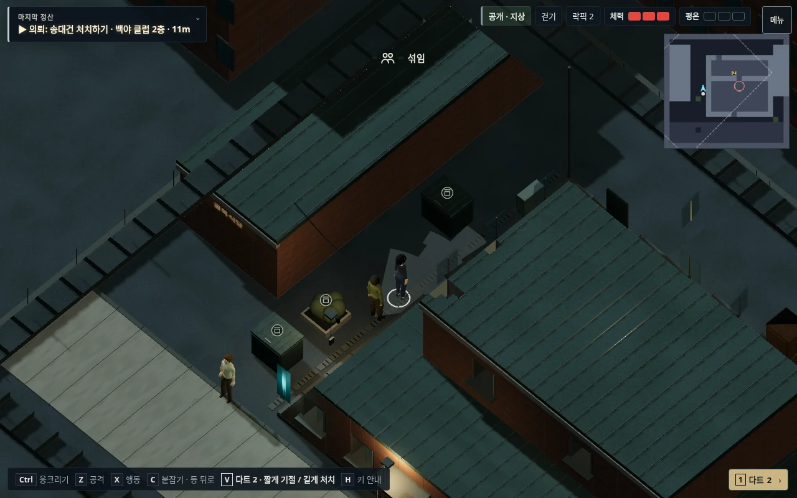

야행 · v133
지붕 아래에 가려지던 골목
54도로 내려다보고, 실제 바닥 통로를 가리는 건물을 걷어낸다. 휴대폰에서 주인공과 다음 이동 지점이 함께 읽히도록 조정했다.
좌우 사진은 같은 구역의 같은 좌표다. 사진을 누르면 원본 크기로 열린다. 기존 버튼 위치와 맵 배치를 유지했다.
PC

벽·지붕의 가림을 줄이면서 건물과 이동 바닥을 구분한다.공식 참고 화면: Shadow Tactics · Commandos 2 · Desperados III. 참고작의 미술 자산은 게임에 포함하지 않았다.